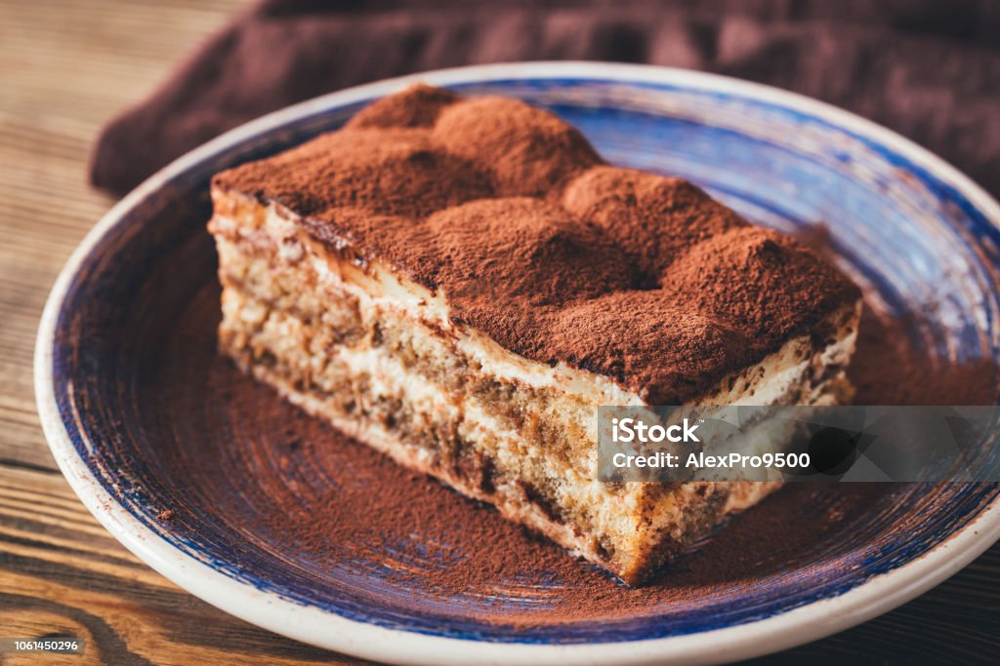

«Терамису»
Рассказывая про известные торты мира, нельзя пройти
стороной этот популярнейший десерт. Его главная
«изюминка» - необычный способ приготовления.
Вместо традиционных коржей основу торта составляет бисквитное печенье
савоярди, которое пропитывается кофе (иногда с коньяком) и прослаивается
нежнейшим кремом из творожного сыра Маскарпоне.
Подают такое угощение в охлаждённом виде с посыпкой из - какао-пудры.
Заказать можете у нас по номеру телефона: 88005553535